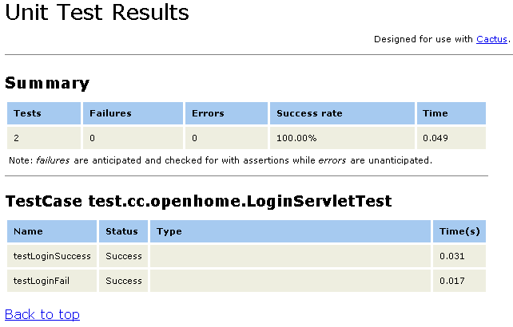

如 果要更貼近真實的環境，你可以實際安裝實際部署專案時所用的容器，設定Cactus的Redirect proxy，由TestRunner客戶 端去請求Redirect proxy，就測試Servlet而言，只需要在web.xml中設定：
...
<servlet>
<servlet-name>ServletTestRedirector</servlet-name>
<servlet-class>org.apache.cactus.server.ServletTestRedirector</servlet-class>
</servlet>
<servlet-mapping>
<servlet-name>ServletTestRedirector</servlet-name>
<url-pattern>/ServletRedirector</url-pattern>
</servlet-mapping>
...
<servlet>
<servlet-name>ServletTestRedirector</servlet-name>
<servlet-class>org.apache.cactus.server.ServletTestRedirector</servlet-class>
</servlet>
<servlet-mapping>
<servlet-name>ServletTestRedirector</servlet-name>
<url-pattern>/ServletRedirector</url-pattern>
</servlet-mapping>
...
客戶端TestRunner預 設會請求伺服端的/ServletRedirector，如果不要這個預設，則可以設定cactus.servletRedirectorName屬 性來修改（相關屬性設定與說明，可參考 Cactus Configuration）。
現在，你可以啟動容器，接著你可以在客戶端撰寫測試案例：
package test.cc.openhome;
import java.io.IOException;
import java.net.URL;
import javax.servlet.*;
import javax.servlet.http.*;
import org.apache.cactus.ServletTestCase;
import org.apache.cactus.WebRequest;
import cc.openhome.LoginServlet;
class TestForLoginServlet extends LoginServlet {
public void doTest(HttpServletRequest req, HttpServletResponse resp)
throws ServletException, IOException {
doPost(req, resp);
}
}
class DummyHttpServletRequest extends HttpServletRequestWrapper {
private String forwardToPage;
private boolean isForwarded;
public DummyHttpServletRequest(HttpServletRequest request) {
super(request);
}
@Override
public RequestDispatcher getRequestDispatcher(String path) {
forwardToPage = path;
return new RequestDispatcher() {
public void forward(ServletRequest req, ServletResponse resp)
throws ServletException, IOException {
isForwarded = true;
}
public void include(ServletRequest req, ServletResponse resp)
throws ServletException, IOException {
}
};
}
public String getForwardToPage() {
return forwardToPage;
}
public boolean isForwarded() {
return isForwarded;
}
}
public class LoginServletTest extends ServletTestCase {
static {
System.setProperty(
"cactus.contextURL", "http://localhost:8080/CactusExample");
}
public void beginLoginSuccess(WebRequest request) {
request.addParameter("user", "justin");
request.addParameter("passwd", "1234");
}
public void testLoginSuccess() throws Throwable {
DummyHttpServletRequest dummyRequest =
new DummyHttpServletRequest(request);
new TestForLoginServlet().doTest(dummyRequest, response);
assertTrue(dummyRequest.isForwarded());
assertEquals("success.html", dummyRequest.getForwardToPage());
}
public void beginLoginFail(WebRequest request) {
request.addParameter("user", "someone");
request.addParameter("passwd", "1234");
}
public void testLoginFail() throws Throwable {
DummyHttpServletRequest dummyRequest =
new DummyHttpServletRequest(request);
new TestForLoginServlet().doTest(dummyRequest, response);
assertTrue(dummyRequest.isForwarded());
assertEquals("login.html", dummyRequest.getForwardToPage());
}
}
注意，cactus.contextURL是 你Redirector proxy所在的應用程式根目錄，接著你就可以使用客戶端TestRunner來測 試程式了。
Cactus附帶有伺服端TestRunner， 你可以在web.xml中加以設定，以Servlet的伺服端TestRunner來 說：
...
<servlet>
<servlet-name>ServletTestRunner</servlet-name>
<servlet-class>org.apache.cactus.server.runner.ServletTestRunner</servlet-class>
</servlet>
<servlet-mapping>
<servlet-name>ServletTestRunner</servlet-name>
<url-pattern>/ServletTestRunner</url-pattern>
</servlet-mapping>
...
如此你就可以直接以瀏覽器請求/ServletTestRunner，指定suite參數為測試案例的全名：
http://localhost:8080/CactusExample/
ServletTestRunner?suite=test.cc.openhome.LoginServletTest
ServletTestRunner?suite=test.cc.openhome.LoginServletTest
預設會以XML傳回測試結果：
<testsuites>
<testsuite name="test.cc.openhome.LoginServletTest"
tests="2" failures="0" errors="0" time="0.233">
<testcase name="testLoginSuccess" time="0.215"/>
<testcase name="testLoginFail" time="0.008"/>
</testsuite>
</testsuites>
<testsuite name="test.cc.openhome.LoginServletTest"
tests="2" failures="0" errors="0" time="0.233">
<testcase name="testLoginSuccess" time="0.215"/>
<testcase name="testLoginFail" time="0.008"/>
</testsuite>
</testsuites>
也可以直接取得 Cactus網站上提供的 cactus-report.xsl， 並將之放在Web應用程式的目錄下，然後使用以下的方式來取得較易閱讀的訊息：
http://localhost:8080/CactusExample/ServletTestRunner?
suite=test.cc.openhome.LoginServletTest&xsl=cactus-report.xsl
suite=test.cc.openhome.LoginServletTest&xsl=cactus-report.xsl
一個結果畫面如下所示：

也可以在 web.xml中指定cactus-report.xsl的位置，例如：
...
<servlet>
<servlet-name>ServletTestRunner</servlet-name>
<servlet-class>org.apache.cactus.server.runner.ServletTestRunner</servlet-class>
<init-param>
<param-name>xsl-stylesheet</param-name>
<param-value>styles/cactus-report.xsl</param-value>
</init-param>
</servlet>
<servlet-mapping>
<servlet-name>ServletTestRunner</servlet-name>
<url-pattern>/ServletTestRunner</url-pattern>
</servlet-mapping>
...
之後在運行測試時 可以於網址列中如下指定：
http://localhost:8080/CactusExample/ServletTestRunner?
suite=test.cc.openhome.LoginServletTest&transform=yes